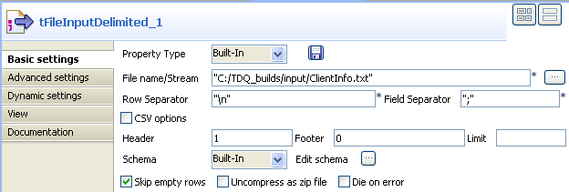
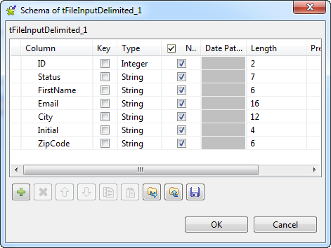
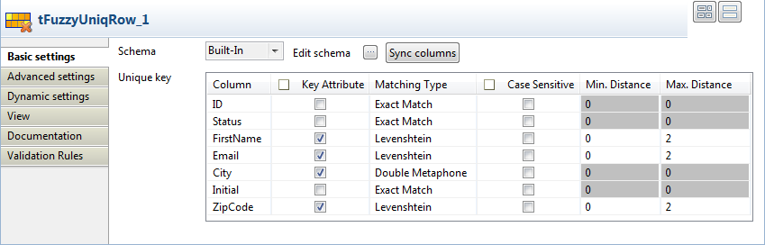

Avertissement
Ce composant est disponible dans la Palette du studio si vous avez souscrit à l'un des produits Talend Platform.
Famille de composant | Data Quality | |
Fonction | Le tFuzzyUniqRow compare des colonnes dans le flux d’entrée, en utilisant une méthode de correspondance définie, et collecte les duplicats rencontrés. | |
Objectif | Le tFuzzyUniqRow aide à vérifier la qualité des données de n’importe quelle source. | |
Basic settings | Schema et Edit schema | Un schéma est une description de lignes, il définit le nombre de champs qui sont traités et passés au composant suivant. Le schéma est soit local (Built-in) soit distant dans le Repository. Cliquez sur Edit Schema pour modifier le schéma. Notez que si vous effectuez des modifications, le schéma passera automatiquement en Built-in. |
|
| Built-in : Le schéma est créé et conservé ponctuellement pour ce composant seulement. Voir également le Guide utilisateur de Talend Data Integration Studio. |
|
| Repository : Le schéma existe déjà et est stocké dans le Repository. Ainsi, il peut être réutilisé. Voir également le Guide utilisateur de Talend Data Integration Studio. |
| Column | Liste de toutes les colonnes du flux d’entrée. |
| Key attribute | Cochez les cases à côté des colonnes que vous voulez sélectionnez. |
| Matching type | Sélectionnez l’algorithme de correspondance dans la liste : Exact Match : associe chaque entrée traitée à toutes les entrées possibles de référence qui ont exactement la même valeur. Levenshtein : cette option se base sur la théorie de la distance d’édition. Elle calcule le nombre d’insertions, suppressions ou substitutions nécessaires pour qu’une entrée corresponde à l’entrée de référence. Metaphone : Cette option se base sur un algorithme phonétique afin d’indexer les entrées selon leur prononciation. Elle charge d’abord la phonétique de toutes les entrées du flux lookup de référence, puis vérifie toutes les entrées du flux principal par rapport aux entrées du flux de référence. Double Metaphone : une nouvelle version de l’algorithme phonétique Métaphone, qui produit des résultats plus précis que l’algorithme originel. Il peut retourner un code primaire et un code secondaire pour une chaîne de caractères. Cela est utile dans des cas ambigus, mais également pour de multiples variantes de noms de famille aux origines communes. |
| Min. Distance | Uniquement pour Levenshtein. Paramétrez le nombre minimal de changements permis afin de correspondre à la référence. Si vous saisissez 0, seules les correspondances parfaites (Exact Match) seront retournées. |
| Max. Distance | Uniquement pour Levenshtein. Paramétrez le nombre maximal de changements permis afin de correspondre à la référence. |
Advanced settings | tStatCatcher Statistics | Cochez cette case pour collecter les métadonnées de process du Job, aussi bien au niveau du Job qu’au niveau de chaque composant. |
Utilisation | Ce composant n’est pas un composant de début (fond vert), il nécessite un composant d’entrée, et un ou plusieurs composant(s) de sortie. | |
Ce scénario décrit un Job à quatre composants, dont le but est de collecter dans deux fichiers séparés toutes les entrées uniques et tous les duplicats d’entrées depuis des colonnes traitées définies, à partir des types de correspondance Levenshtein et Double Métaphone.
Le fichier d’entrée dans cet exemple ressemble à ceci :
ID;Status;FirstName;Email;City;Initial;ZipCode 1;married;Paul;pnewman@comp.com;New York;P.N.;55677 2;single;Raul;rnewman@comp.com;New Ork;R.N.;55677 3;single;Mary;mnewman@comp.com;Chicago;M.N;66898
Déposez un tFileInputDelimited, tFuzzyUniqRow, et deux tFileOutputExcel de la Palette dans l’espace de modélisation graphique.
Connectez le tFileInputDelimited au tFuzzyUniqRow à l’aide d’un lien Main > Row, le tFuzzyUniqRow au premier tFileOutputExcel avec un lien Uniques, puis au second tFileOutputExcel à l’aide d’un lien Duplicates.

Double-cliquez sur le tFileInputDelimited afin d’ouvrir sa vue Basic settings et définir ses propriétés.
Cliquez sur le bouton [...] à côté du champ File Name pour sélectionner le fichier contenant les données d’entrée.
Au besoin, paramétrez les champs Header, Footer, and Limit.
Pour ce scénario, saisissez 1 dans le champ Header. Les champs Footer et Limit pour le nombre de lignes traitées ne sont pas paramétrés.
Cliquez sur Edit schema pour ouvrir une boîte de dialogue où vous pourrez décrire la structure des données du fichier délimité source.
Dans ce scénario, le schéma source est composé des colonnes suivantes : ID, Status, FirstName, Email, City, Initial, et ZipCode, (ID, Statut, Prénom, E-mail, Ville, Initiales et Code postal,).
Double-cliquez sur le tFuzzyUniqRow afin d’afficher sa vue Basic settings et définir ses propriétés.
Dans la colonne Key Attribute, cochez les cases à côté des colonnes que vous souhaitez vérifier en utilisant la méthode de correspondance définie, Firstname, Email, City et ZipCode (Prénom, E-mail, Ville et Code postal) dans cet exemple.
Dans la colonne Matching Type, paramétrez les méthodes de correspondance que vous souhaitez appliquer pour chaque colonne sélectionnée.
Dans cet exemple, Levenshtein est utilisé comme méthode de correspondance pour les colonnes FirstName, Email, et ZipCode, le Double Metaphone sera utilisé comme méthode de correspondance pour la colonne City.
Paramétrez ensuite les distances minimale et maximale pour la méthode Levenshtein. Dans cette méthode, la distance est le nombre de changements devant être apporté aux caractères (insertion, suppression ou substitution) afin que l’entrée corresponde entièrement à la référence. Dans cet exemple, l’objectif est de faire en sorte que la distance minimale soit égale à 0, et que la distance maximale soit égale à 2. Cela conduira à l’écriture de toutes les entrées des colonnes FirstName, Email, et ZipCode qui correspondent exactement ou ont au plus deux modifications de caractères. Il n’y a ni distance minimale, ni distance maximale à paramétrer pour le Double Metaphone, car cette méthode de correspondance est basée sur les divergences phonétiques dans les données d’entrée.
Double-cliquez sur le premier tFileOutputExcel afin d’afficher sa vue Basic settings et définir ses propriétés.

Paramétrez le répertoire de destination, ainsi que la nom de la feuille (Sheet name), et cochez la case Include header.
Répétez l’opération pour le deuxième tFileOutputExcel.
Sauvegardez votre Job et cliquez sur F6 pour l’exécuter.
Le tFuzzyUniqRow utilise la méthode de Levenshtein pour comparer séparément chacune des trois colonnes définies, il utilise la méthode du Double Metaphone, afin de comparer les données de la colonne City, puis passer la ligne unique et les doublons aux fichiers de sortie définis. Dans notre exemple, les deux premières lignes correspondent, cependant, la deuxième ligne ira dans la sortie duplicates.
La troisième ligne est unique et ira dans la sortie uniques.